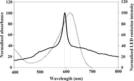
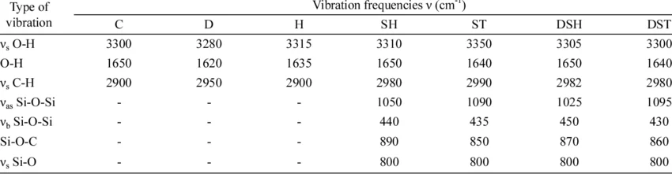

Characteristic vibration
| Vietnamese | ( ) Dao động đặc trưng |
|---|---|
| English | Characteristic vibration |
| Pronunciation | /ˌkærəktəˈrɪstɪk ˌvaɪˈbreɪʃn/ |
| Word type | noun (as labelled in the PDFs) |
Topic 1 — Meaning (Vietnamese)
( ) Dao động đặc trưng
Meaning (English)
The specific stretching or bending motion of chemical bonds in a functional group when exposed to infrared light (Chuyển động dao động kéo dài hoặc uốn cong đặc trưng của các liên kết hóa học trong nhóm chức khi tiếp xúc với ánh sáng hồng ngoại.
Example
Every functional group has its own characteristic vibration that allows scientists to identify it on an IR spectrum. (Mỗi nhóm chức có dao động đặc trưng riêng cho phép các nhà khoa học nhận diện nó trên phổ IR).
Images from the PDFs


